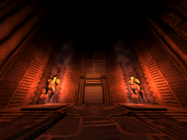

LEVELS
ULTRAKILL contains many levels which are split into a prelude and three acts. In a regular playthrough, provided the player does not die, each level can typically be completed within 3-15 minutes.
Each act contains three differently themed layers. The first two layers of an act each contain four levels, while the last one contains only two. Each layer has one secret level, the entrance to which is hidden in one of the levels of the layer. Instead of a normal secret level, the last layer of each act contains a hidden Prime Sanctum. The prelude, which is considered separate from the three acts, consists of 5 main levels and 1 secret level.
Currently, the full release of ULTRAKILL is planned to have a total of 45 levels, with 35 main levels, 7 secret levels, and 3 Prime Sanctums.
CHALLENGES
All levels, save for secret levels and Prime Sanctums, have one challenge. Challenges are optional objectives that require the player to change their playstyle, find a secret, stray from the intended path, or otherwise perform something, well, challenging. The level must be completed for the challenge to be considered "done", however dying within the level after completing the challenge will not require the player to do it again. After a challenge is achieved, it is permanently considered completed on all difficulties. Completing a level's challenge will allow the player to play the level's Music in The Cyber Grind.
SECRETS
ULTRAKILL's levels often contain secrets for the player to find. Soul Orbs, for example, are glowing orbs that can be found in out-of-the-way locations in all levels except for secret levels, boss levels, and Prime Sanctums. Soul Orbs can be used to unlock skins for the player's weapons. All levels containing Soul Orbs have a total of 5 (except for 0-3: DOUBLE DOWN and 0-4: A ONE-MACHINE ARMY, which have only 3). Soul Orbs can also appear as Blood Orbs or Dual Wield Orbs, which grant the player a temporary power-up. Once a Soul Orb is collected, it is considered collected on every difficulty and will appear grey/transparent within the level. Touching an already collected Soul Orb yields no points.
LEVEL MAPS
| LEVEL |
ENEMIES |
COLLECTABLES |
CHALLENGES |
P-RANK REQUIREMENTS |
PRELUDE

|